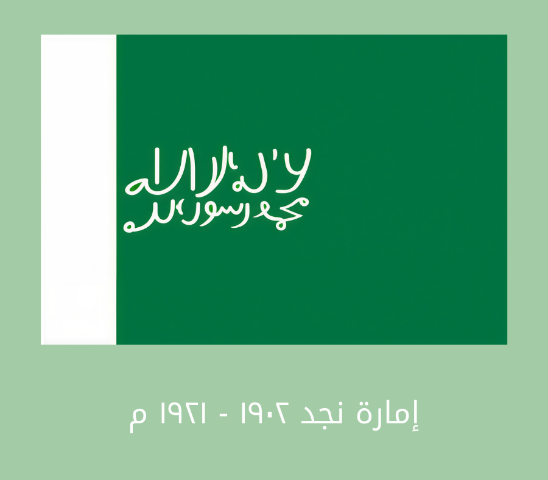
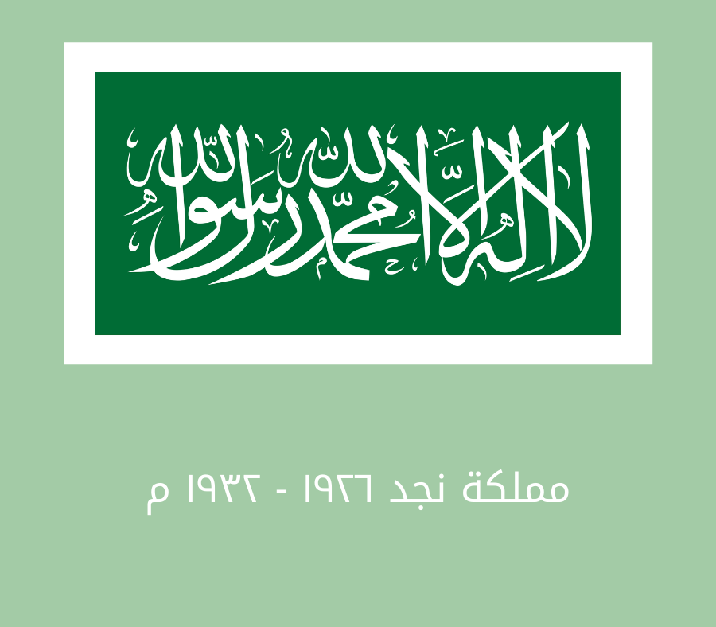
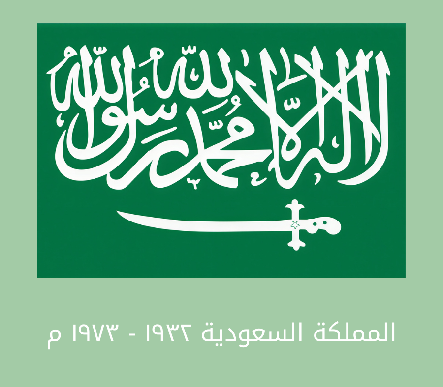
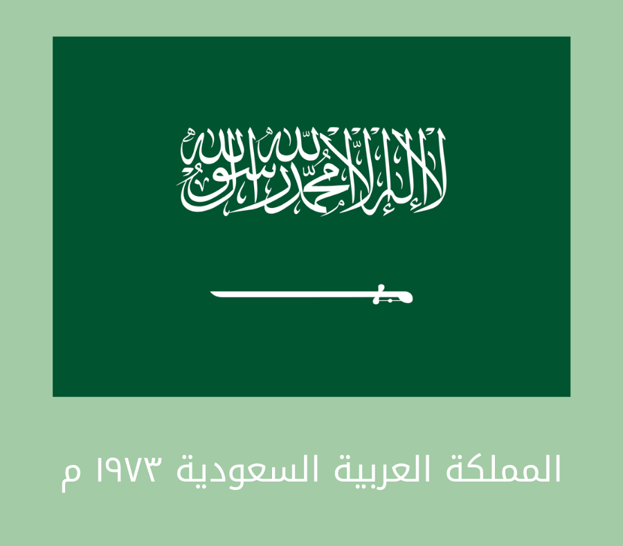

صدر الأمر الملكي الكريم من خادم الحرمين الشريفين الملك سلمان بن عبد العزيز آل سعود -حفظه الله- بأن يكون 11 مارس يوماً للعلم؛ والذي نستذكر فيه كل عام فخرنا برمز هويتنا الوطنية، واعتزازنا بالقيم الراسخة التي يحملها في مضامينه، والتي ترتكز عليها المملكة العربية السعودية.
للمزيد:
https://saudiflag.sa/ar مراحل تطور العلم السعودي - هيئة الإذاعة والتلفزيونالمرحلة الأولى
علم إمارة الدرعية بين الأعوام من 1750 إلى 1818م، كان يطلق على المملكة العربية السعودية إمارة الدرعيّة وكان العلم مستطيل الشكل، وذا قاعدة خضراء داكنة، يتوسطه شكل هلال مرسوم باللون الأبيض.

المرحلة الثانية
علم إمارة نجد بدأت رحلة الملك المؤسس عبد العزيز آل سعود رحمه الله إلى نجد في عام 1902م، واستطاع حينها السيطرة عليها وضمها للبلاد، ووضع بعض التعديلات على شكل العلم، فأزال رسم الهلال مستبدلاً إياه بكلمة لا إله إلا الله، وبقي العلم على هذا الحال لنهاية عام 1921م.
المرحلة الثالثة
علم مملكة نجد تابع الملك عبد العزيز في الفترة الواقعة بين 1921 و1926م ضم المزيد من المقاطعات لإمارة نجد، حتى صار يطلق عليها اسم مملكة نجد، فتم تغيير العلم أنّ كتبت كلمة لا إله إلا الله بخط أكبر على المساحة الخضراء، وأصبح الجزء الأبيض الطولي موجوداً إلى يمين العلم، كما أضيفت علامة السيف باللون الأبيض أسفل كلمة التوحيد.

المرحلة الرابعة
علم مملكة نجد والحجاز في المرحلة الواقعة بين 1926 و1932) تمّ توسيع أطراف المملكة لتشمل منطقة الحجاز كاملة، فحدث تغيير على شكل العلم، فأزيلت علامة السيف، وأحيطت الراية الخضراء باللون الأبيض تتوسطها كلمة التوحيد باللون الأبيض.

المرحلة الخامسة
علم المملكة العربية السعودية بعد انتهاء توحيد البلاد، طرأت تغيرات جديدة على العلم في المرحلة الواقعة بين الأعوام 1932-1973م، حيث صارت أرضية العلم خضراء بالكامل، وكتبت عليها علامة التوحيد بخط أبيض كبير، ووضعت تحتها علامة السيف، والذي اتصلت نهايته ببداية كلمة التوحيد.

المرحلة السادسة
في عهد الملك فيصل عام 1973م حصلت أيضاً بعض التغييرات الطفيفة على شكل العلم، فلقد استدعى الملك حافظ وهبة لوضع تعديلات جديدة عليه، فقام الأخير بتعديل مقاساته، وغيّر رسم كلمة التوحيد، وقلب رسم السيف، فجعل مقبضه تحت بداية كلمة التوحيد، أمّا نهايته فتصل نحو السارية، وذلك كناية عن انتهاء القتال، والرمز للقوّة والمنعة، وهو لا يزال الرسم المعتمد للمملكة إلى وقتنا الحالي.